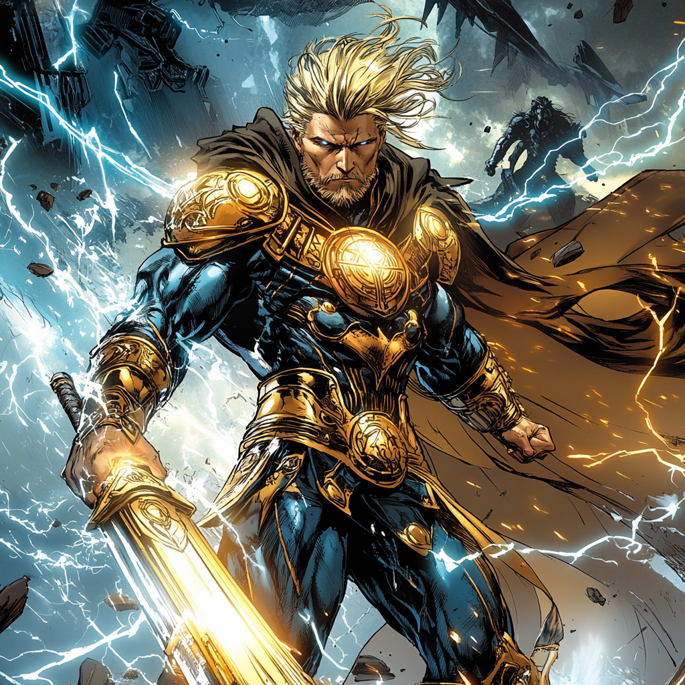

Stormforge: The Mortal Thunder

Born of Two Worlds
Sigrun Thorsson never truly belonged.
The blood of gods and warriors ran through his veins, yet he was born on Midgard, raised among mortals who had long forgotten the power of the old gods. His father, Hjalmar the Storm-Blessed, was an Asgardian warrior of great renown, a skald whose deeds were sung in the halls of Valhalla. His mother, Ingrid Thorsson, was a mortal—a woman of fire and steel, a descendant of Viking warriors who had once raised their blades to the heavens in defiance of the gods themselves.
Hjalmar and Ingrid’s love was brief but fierce, a story of passion and fate entwined for a single moment before the tides of war pulled Hjalmar back to Asgard. He left behind a son destined for greater things—but Sigrun grew up with no knowledge of his divine lineage, raised by his mother in the cold winds of Norway, where the sea roared like an angry god and the mountains whispered forgotten names.
From the moment he could walk, Sigrun was different. He was stronger than the other children, faster, unbreakable in ways that defied explanation. His mother never questioned it, never treated him like anything but her son, though she whispered old Norse prayers when she thought he wasn’t listening.
Then, on his eighteenth winter, the truth arrived in the form of thunder and war.
The Battle That Woke the Storm
Sigrun’s village was not unknown to the supernatural. Beings
of shadow and chaos had long sought forgotten corners of
Midgard to plot their return. The Jötunn, the ancient
enemies of Asgard, had taken an interest in him—not for who
he was, but for what he could become.
They came at night, shrouded in ice and malice. Their leader, a frost-forged warlord known as Hrothvek the Bitter, sought to crush the Asgardian bloodline before it could rise again. They did not expect resistance.
They did not expect Sigrun.
The battle was short and brutal. Sigrun, armed only with a simple axe and his bare fists, fought like a force of nature. He moved with an instinct no mortal should possess, his strength overwhelming, his body unyielding even to the enchanted weapons of the Jötunn raiders. His rage burned hotter than the ice, his berserker fury igniting something ancient within him—something that even he did not understand.
Then, the heavens split open.
Lightning roared. Thunder cracked the sky. And from the storm descended Thor, the God of Thunder himself.
With a single swing of Mjolnir, the Jötunn warband was obliterated, scattered like snow before a hurricane. Hrothvek fled, vowing vengeance. And Sigrun, still breathing hard, his fists bloodied, turned to face the cousin he never knew he had.
The Gift of Tempest’s Fang
Thor did not offer explanations—only truths.
Sigrun was Asgardian by blood, a distant heir to the warrior legacies of old. His power was his birthright, but it was raw, untamed, lacking the discipline of true Asgardian warriors. If left unchecked, it would consume him, turning him into a beast of battle rather than a force of honor.
But Thor saw something worthy in him.
From his side, he drew a weapon not seen on Midgard in centuries—Tempest’s Fang, a blade forged in the heart of a thunderstorm, once wielded by an Asgardian warlord whose name had long been erased from history.
"This blade is no heirloom,” Thor told him, placing it in his hands. “It is a challenge. Wield it well and prove that your heart is stronger than your rage.”
Then, he made another decree—Sigrun would train at the Boston Avengers Academy, where he could learn to master his abilities, to temper his fury, to become something more than a warrior—something worthy of legend.
Becoming Stormforge
BAA was not what Sigrun expected. He was a warrior among
tacticians, a brawler among strategists, a god-born among
mortals. The rules of Midgard’s heroes conflicted with the
instincts that ran deep in his blood. He did not understand
restraint, careful planning, or the idea that some fights
were not meant to be won with brute force.
But the Academy changed him.
He trained harder than anyone, pushing his body past limits even Asgardians thought impossible. He fought alongside mutants, soldiers, scientists, and mystics, learning not just how to swing a blade, but when not to. His berserker fury, once a reckless storm, became a controlled tempest—unleashed only when the moment demanded it.
He took the name Stormforge, a reminder that he was not simply a weapon, but a warrior shaped by both storm and fire.
With Tempest’s Fang in hand, he fights not for the glory of Asgard, not for the pride of his bloodline, but for his own honor, his own purpose, and the people who now stand beside him.
A Legacy Yet to Be Written
Thor still watches, waiting to see if Sigrun will forge his
own legend or be consumed by the fire within him. The Jötunn
still hunt him, knowing that his blood carries a power they
fear. And deep within his soul, the battle between man and
god rages on.
But one thing is certain—when Stormforge enters the fight, the thunder rolls, and the storm is coming.